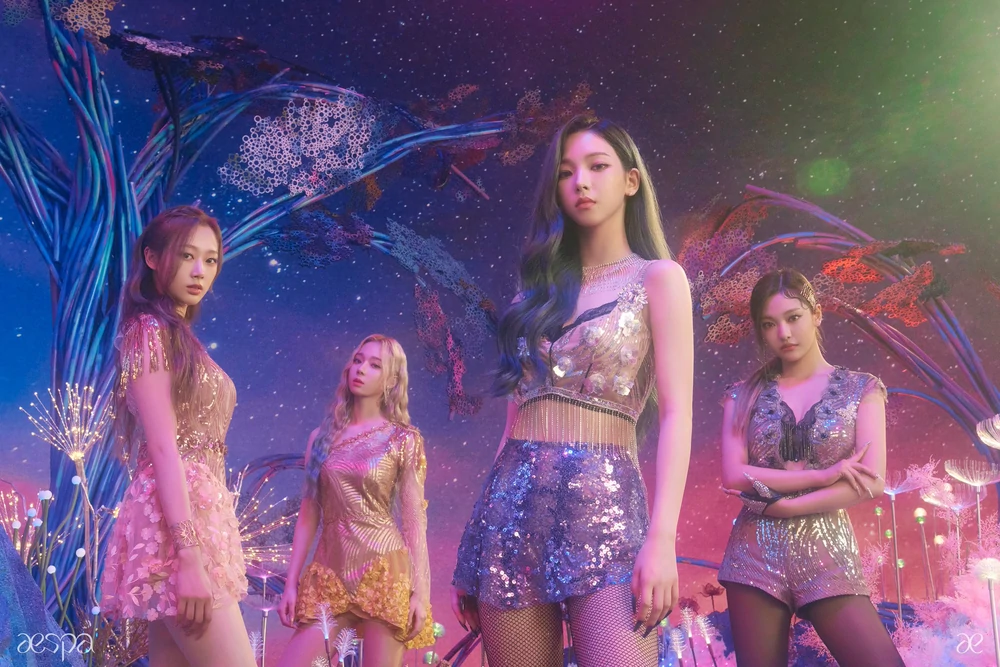
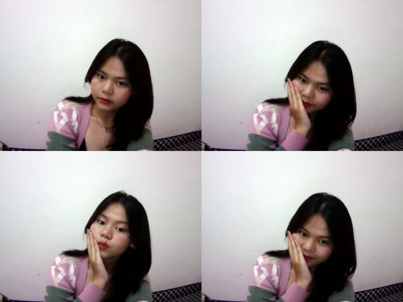
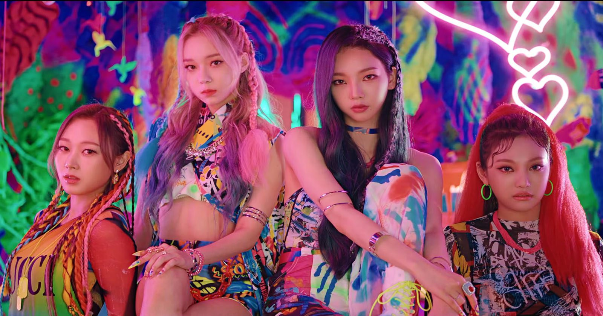
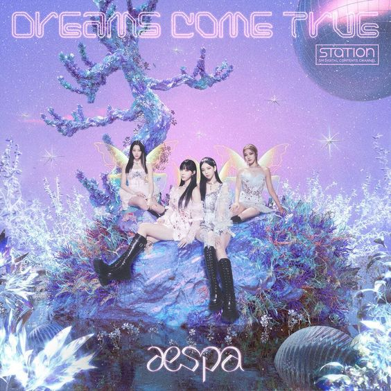

Aespa adalah girl grup asal Korea Selatan yang dibentuk oleh SM Entertainment.
Grup ini terdiri dari empat anggota: Karina, Giselle, Winter dan Ningning. Mereka melakukan debut pada 17 November 2020 dengan single "Black Mamba".
Aespa memang menerapkan konsep yang berbeda dari girl group lainnya, mereka menggunakan konsep dunia metaverse.
Konsep dunia metaverse menjadi ciri khas aespa sejak ia didebutkan oleh SM Entertainment, aespa tampil bak karakter AI.

Karina 𓍢ִ໋🌷͙֒✧˚ ༘ ⋆｡˚♡
Karina dengan nama asli Yu Ji Min (유지민) lahir di Bundang-gu, Seongnam-si, Gyeonggi-do, Korea Selatan pada tanggal 11 April tahun 2000.
Karina Aespa menjadi leader sekaligus center dalam girl grup yang baru saja debut pada 2020 silam. Sebelum debut, Karina Aespa aktif di media sosial dan direkrut oleh SM Entertainment menjadi trainee pada tahun 2016.
Winter✧˚ ༘ ⋆｡♡˚
Winter dengan nama asli Kim Min Jeong (김민정) lahir di Busan, Korea Selatan pada tanggal 1 Januari tahun 2001.
Winter pernah bersekolah di Sekolah Dasar Samseong, Sekolah Menengah Samseong, dan SMA Putri Yang San (tidak lanjut), tetapi Winter mengikuti ujian Kesetaraan Kelulusan SMA (GED) dan berhasil diterima.
Winter mempunyai posisi visual, main vocalist, lead dancer di groupnya.
Ningning ⋆ ˚｡⋆୨♡୧⋆ ˚｡⋆
Ningning dengan nama asli Ning Yizhuo (宁艺卓) lahir di Harbin China pada tanggal 23 Oktober 2002.
Dari keempat member Asepa, Ningning merupakan member termuda,
Ningning debut bersama Aespa dan mempunyai posisi sebagai lead vocal karena suaranya yang sangat powerfull. Idol berkewarganegaraan China ini juga fasih berbicara dalam berbagai bahasa selain China yaitu Korea hingga Inggris. Ningning pernah menempuh pendidikan di SMA Afiliasi Universitas Normal Harbin dan telah lulus.
Giselle ˗ˏˋ ♡ ˎˊ˗
Giselle dengan nama asli Aeri Uchinaga, lahir di Sinsa-dong, Seoul, Korea Selatan pada tanggal 30 Oktober tahun 2000.
Giselle memiliki posisi sebagai rapper utama alias main rapper. Sebelum debut sebagai member AESPA, Giselle adalah anggota paduan suara sekolah.
Song
Menampilkan Animasi dari Atas ke Bawah
About me≽^•⩊•^≼

Hallo All
Nama : Dinda Aprillianti
NIM : 10123023
Kelas : IF-1
Aespa merupakan salah satu favorit girl group asal korea selatan,selain mereka memiliki visual yang sangat cantik mereka juga mempunyai suara yang sangat bagus.
Oleh karena itu alasan saya menggunakan Aespa sebagai objek tugas kali ini. Sekian Terimakasih.
Black Mamba

Black Mamba adalah singel debut karya grup vokal perempuan Korea Selatan Aespa. Singel tersebut dirilis pada 17 November 2020, melalui SM Entertainment.
Lagu tersebut ditulis dan dikomposisikan oleh Yoo Young-jin, sesambil juga dikomposisikan oleh Omega, Ella Isaacson, Gabriela Geneva (NIIVA), Jordan Reyes, Shaun Lopez dan Scott Chesak.
Dream Comes True

Lagu ini dibawakan ulang aespa setelah dipopulerkan S.E.S pada 1998 silam. Aespa mengubah Dreams Come True menjadi lebih hip hop dari versi aslinya.
Lagu yang berjudul ‘Dreams Come True’ ini adalah lagu yang dinyanyikan oleh aespa yang dirilis pertama kali pada tanggal 20 Desember 2021 yang lalu. Dalam kurun waktu kurang dari 24 jam, video klip lagu ini sudah diputar lebih dari 7,7 juta kali dalam akun YouTube SMTOWN. Tak hanya itu, dalam waktu yang sama, video yang sama menduduki peringkat 13 dalam trending for music di YouTube Indonesia. Lagu ini pun mendapatkan respon baik dari penggemar terbukti dengan jumlah likes yang mencapai 627 ribu.